The team:
- Sharmistha Chatterjee
- Priyamvada Joshi
- Shilpa Shivapuram
- Aashima Kumar
- Abhishek Kumar
Last Updated: 2020-07-03
Rising AI 2020
What is demand forecasting?
Demand forecasting is a science or an art of predicting customer demands. These predictions are analyzed and leveraged to make key business decisions to optimize their supply chain and keep their costs lean.
What are the typical business problems where forecasting plays an important role?
- Can I optimize my inventory to minimize costs as well as manage demand.
- Can I create custom campaigns and increase my customer base using past behavior
- How can I optimize my costs on marketing spend
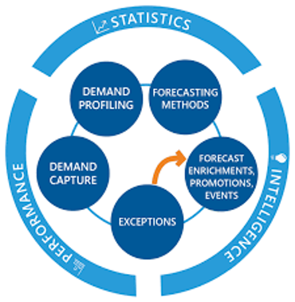
Conventional demand forecasting techniques
- Survey methods
One of the most common and direct methods of forecasting demand in the short term. This method encompasses the future purchase plans of consumers and their intentions. Typically, an organization conducts surveys with consumers to determine the demand for their existing products and services and anticipate the future demand accordingly.
- Statistical methods
These are complex set of methods of demand forecasting used to forecast demand in the long term. In this method, demand is forecasted on the basis of historical data and cross-sectional data.
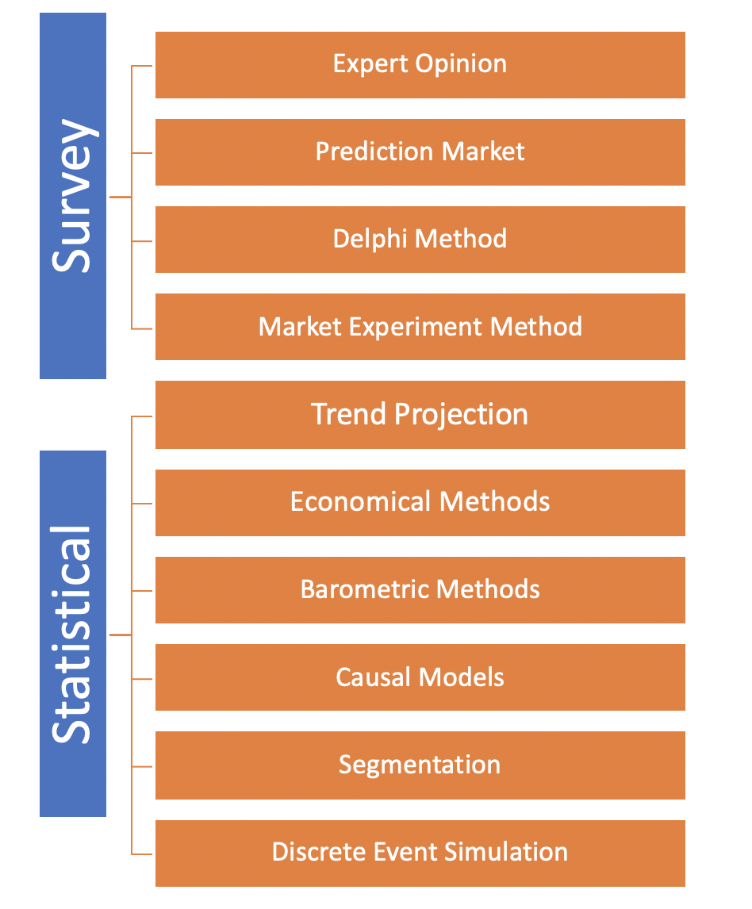
Another perspective of looking at forecasting can be also
- Time series forecasting
- moving average method
- exponential smoothing method
- trend projection methods
- Causal methods
- chain-ratio method
- consumption level method
- end use method
- leading indicator method
Now that we understand the techniques of forecasting and the client impact, let's think about some of the other factors that needs to be considered while designing such system
Causal forecasting methods
Causal forecasting is the technique that assumes that the variable to be forecast has a cause-effect relationship with one or more other independent variables. Causal techniques usually take into consideration all possible factors that can impact the dependent variable. It implements an approach to estimating the causal effect of a designed intervention on a time series. For example, how many additional daily clicks were generated by an advertising campaign? Answering a question like this can be difficult when a randomized experiment is not available.
What is ARIMA model
ARIMA
The ARIMA model (Auto-Regressive Integrated Moving Average) analyzes the time data to predict the future data points. The biggest advantage of this model is that it can be applied in cases where the data shows evidence of non-stationarity.
Below is the interpretation of the ARIMA

ARIMAX
The ARIMAX (Autoregressive Integrated Moving Average with Explanatory Variable)model can be viewed as a multiple regression model with one or more autoregressive (AR) terms and/or one or more moving average (MA) terms. This method is suitable for forecasting when data is stationary/non stationary, and multivariate with any type of data pattern, i.e., level/trend /seasonality/cyclicity
Below is the interpretation of the ARIMAX
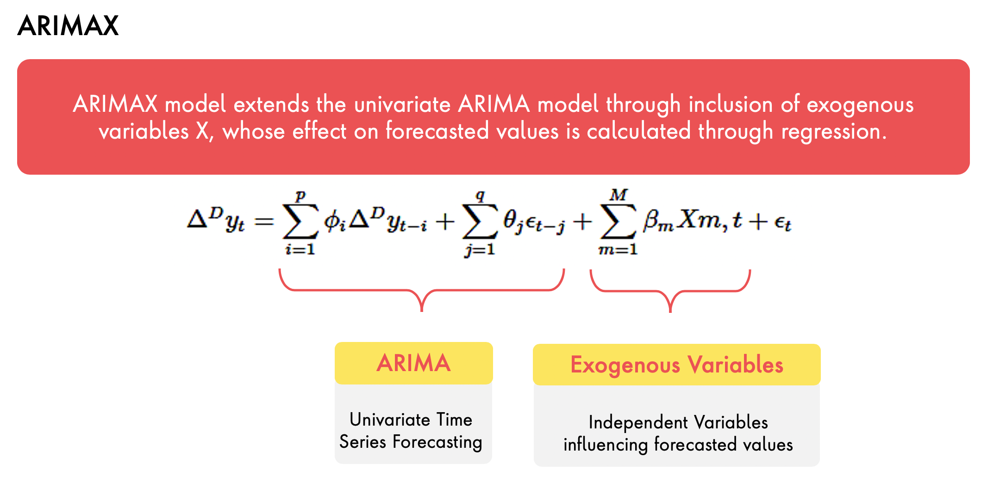
Let's look at how we applied these techniques to solve the business problem for one of our automotive client.
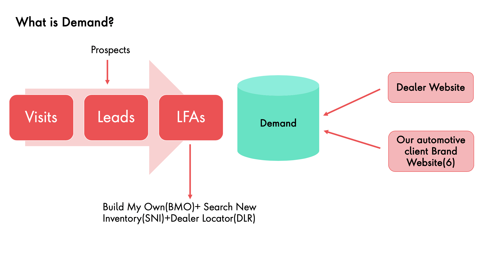
How did we apply our customized model to predict the future demands and then provide better conversion for the automotive client
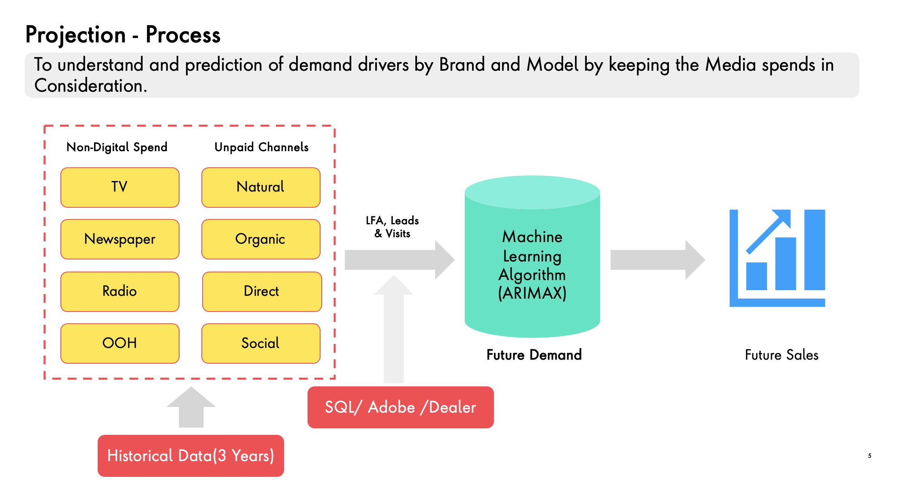
With the new custom developed model, we also tracked the increase in the leads that were generated and also capture the increase in sales for the client
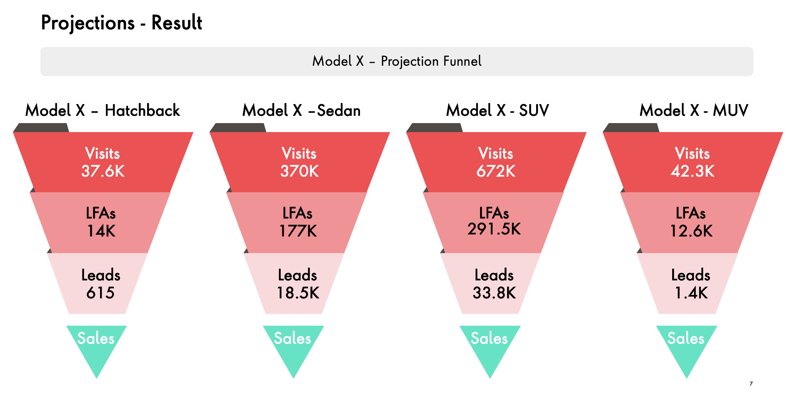
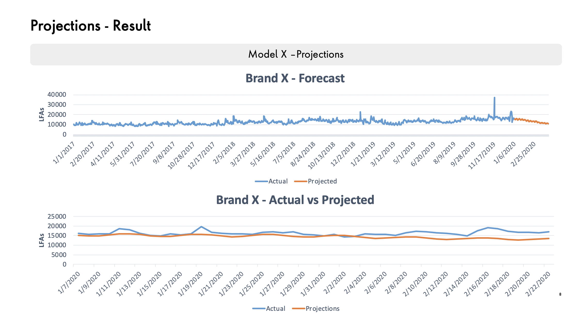
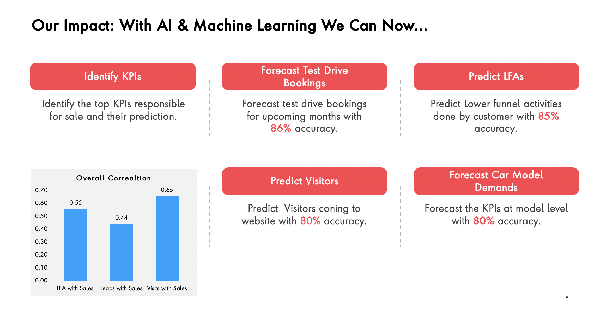
Clone the code and datasets from our https://github.com/datacoe-publicissapient/risingai2020
Steps:
- Login in to your colab notebooks.
- Import the notebooks from github
a. RMSE MAPE Forecasting.ipynbclick here
b. Causal_Impact.ipynbclick here
- The datasets are present in github inside data folder
- Run the notebook as we proceed in the workshop through step by step instructions.
- Finally download the files using the below commands
- files.download(‘leads_total_forecast_suggested.csv')
- files.download(‘visit_unpaid_forecast_suggested.csv')
- files.download(‘lfa_unpaid_forecast_suggested.csv')
and save it to disk.
- You can plot the columns of csv for actual vs predicted and see the result.
Sample illustration of these plots:
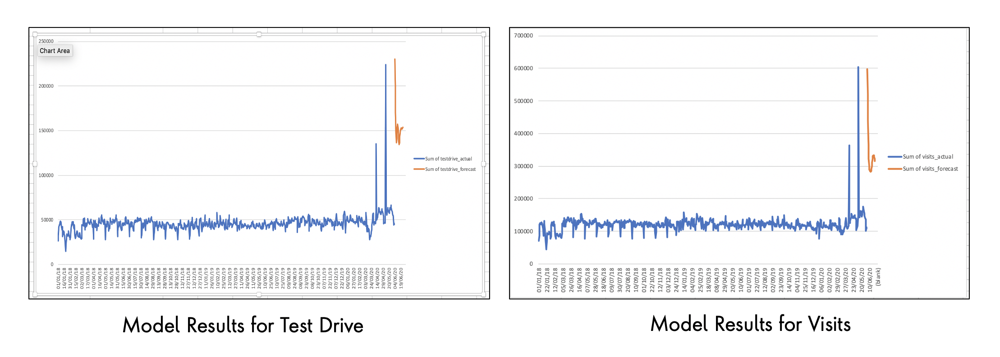
Budget Optimization is a vital part of any business and it is essential ingredient to determine the forecasting as it is key for all the assumptions based on which business make their investment and spend
So how did we address this problem for our client ?
Our team collated data from disparate sources to create a unified view to understand how spend was affecting the demand drivers. This provided the ability to quickly model and interpret how effectively spend across various online and offline avenues was generating value
We looked upon the factors which can influence the forecasting.
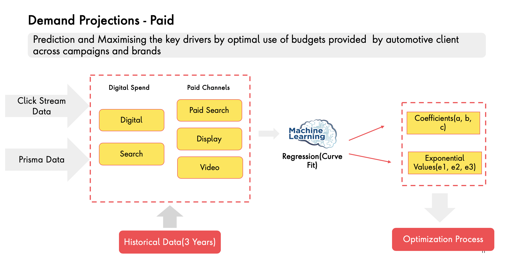
Based on the influencing factors and features we looked upon the applying this on the spend and determine the predicted sales
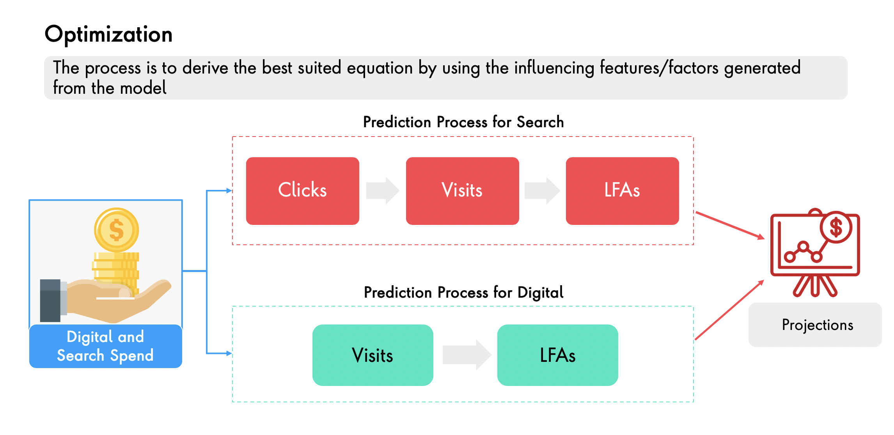
Post our analysis, we derived the most optimal equation that suited the client need to leverage the budget and also derive maximum LFAs
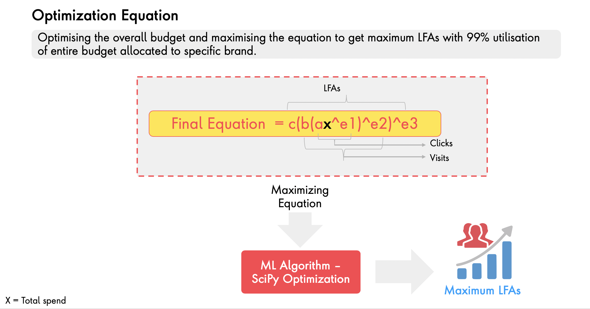
The optimization equation also had to cater to constraints provided by the business. For e.g where the budget is mandatory and where these can be optional.
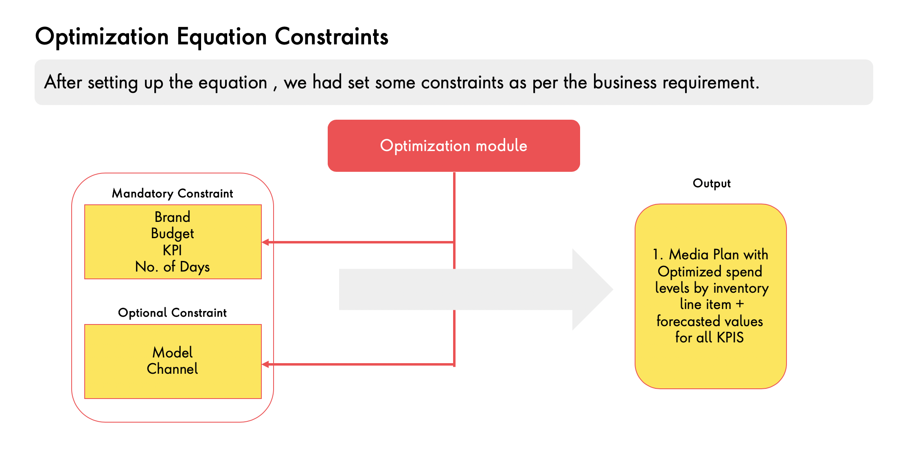
Using the all of the above, we setup the goal setting equation which would be applied to derive the spend across the various models
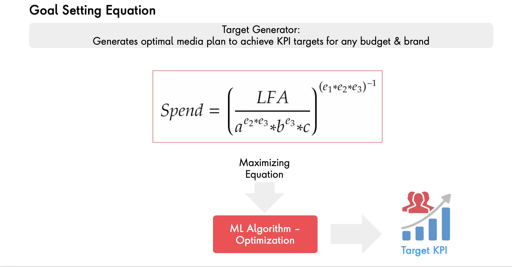
Below is the sample illustration of the optimized budget allocated as per the model to arrive at the goal
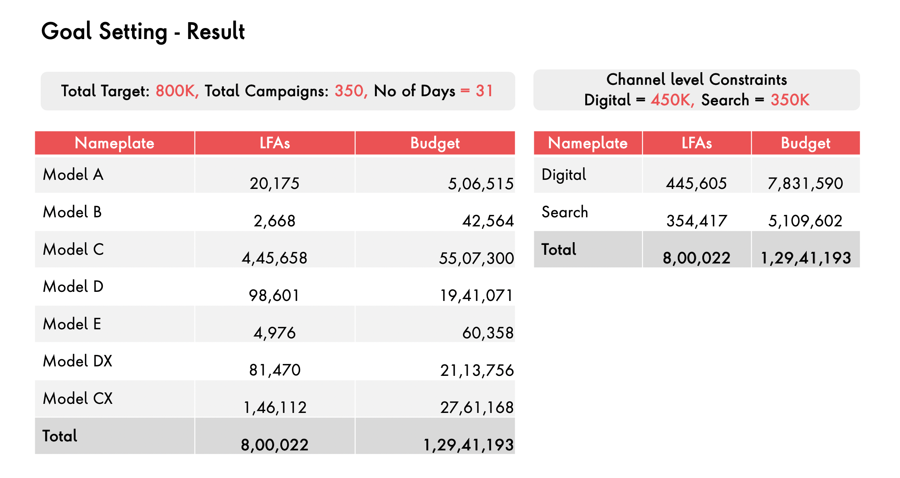
As a result, we could enable the client to allocate optimal budget to looking at the forecasted sales
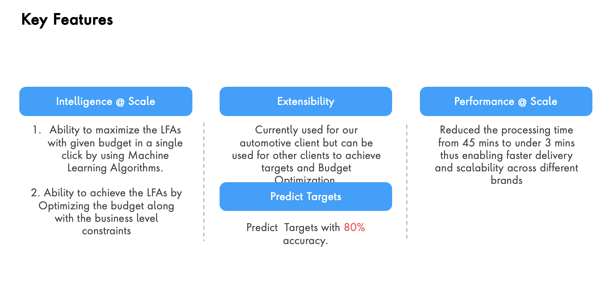